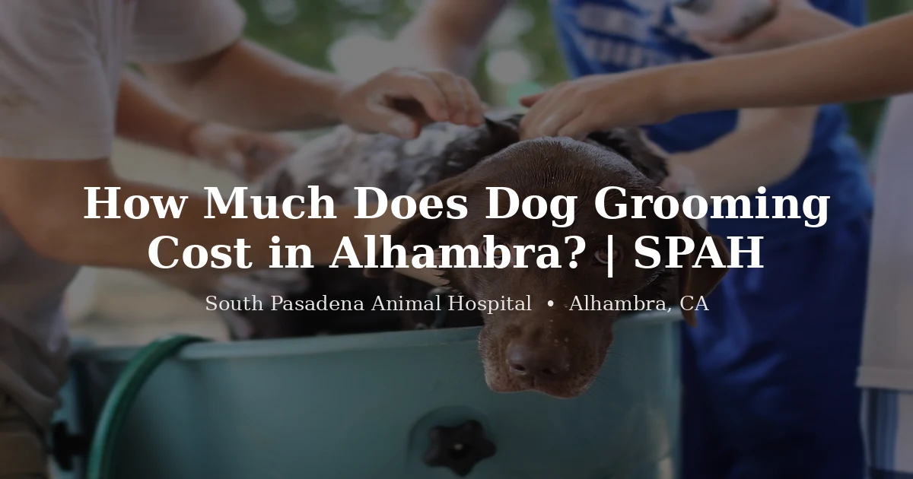

How Much Does Dog Grooming Cost in Alhambra?

Say you have a doodle. He is about eight months old, his adult coat has just come in thick, and you are starting to see small tangles behind his ears and under his legs that your brush is not getting through. So you call around for a groomer. The first place quotes one price on the phone and a higher one when you show up. The second will not give you a number at all until they see him. This is the part of dog grooming that frustrates people the most, so let us walk through what a groom actually costs in Alhambra and what makes the price move.
We post our grooming prices for the same reason we post our medical prices. You should have a good idea of what you are paying before you book. Here is how it works.
What a groom includes, and what it costs
We offer two main services. The first is a bath. A bath starts at about $50 and includes a warm bath, a blow-dry, a full brush and comb-out, and an ear cleaning. It does not include a haircut. Most owners use it as the maintenance visit between full grooms to keep the coat clean and tangle-free.
The second is a full groom. A full groom starts at about $90 and includes everything in the bath plus a breed-appropriate haircut and a nail trim. That is the service most people picture when they think of grooming.
Both prices go up with the size of the dog and the type of coat. A small, short-haired dog sits at the bottom of the range. A large dog, or a dog with a thick double coat like a husky or a heavy curly coat like a doodle, sits at the top, where a full groom runs between about $125 and $250. The full list, broken down by size, is on our grooming page. There are also a couple of add-ons we are asked about often: a medicated bath for skin conditions, and a flea treatment bath.
Why the quote changes once we see the dog
The honest answer is that we are pricing time, and we cannot tell how much time a dog will take until the dog is in front of us. Two dogs that weigh the same can be very different jobs. A beagle takes a fraction of the time a doodle of the same weight does, because the coat is short and does not tangle.
Matting is the biggest variable. When a coat has not been brushed or groomed for a while, it forms mats close to the skin. Removing them safely is slow work, and in bad cases the kindest option is to shave the coat short and start fresh. A dog that comes in heavily matted can take twice as long as the same dog on a regular schedule. That is also why staying on a schedule usually costs less over a year than catching up after the coat gets out of hand.
What is different about grooming at a vet clinic
Our groomer works in the same building as our veterinarians, and in practice that changes a few things. If she notices something while she is working, a lump, an ear infection, red skin, a cracked nail, or a sore hidden under a mat, a veterinarian can look at it the same day instead of you booking a separate appointment. Dogs that are anxious, elderly, or managing a health condition are handled by a team that is used to medical situations. And if a severely matted coat comes off and reveals irritated skin underneath, which does happen, help is right down the hall.
This matters most for the dogs that find grooming stressful. A nervous dog or a senior dog does not get rushed. We would rather take longer and keep the visit calm than push a frightened dog through it.
How often your dog needs it
This depends almost entirely on the coat. A short-coated dog may only need an occasional bath and regular nail trims, which you can book on their own. A curly or double-coated breed, like a poodle, a doodle, or a shepherd, generally needs a full groom every four to eight weeks. If you wait much longer than that, the coat tends to mat, and a routine haircut turns into a dematting. If you are brushing at home and the coat still tangles, that is usually a sign to book a little sooner.
Booking a groom
Grooming at South Pasadena Animal Hospital is by appointment, at 3116 W Main St in Alhambra. When you book, tell us if your dog is anxious, a senior, or matted, or if a past grooming did not go well. We schedule extra time for those dogs on purpose. You can see the full price list by size on our grooming page, or call us at (626) 441-1314.